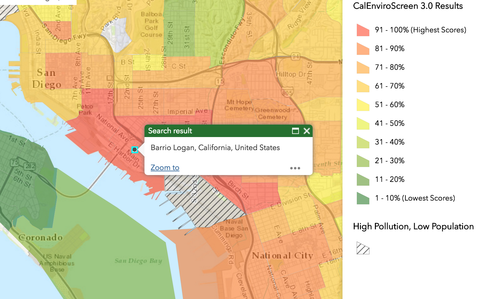

Summary: Due to governmental neglect and haphazard zoning regulations, the incidence of asthma is disproportionately higher in Barrio Logan than other parts of the United States. However, for the members of the vibrant Chicano community whose families have resided there for generations, this phenomenon sheds light on a larger history of environmental racism.

An overhead view of the shipyards and chemical plants just a few blocks from residences in Barrio Logan.
There is a story among the people of Barrio Logan about a young girl brought to a doctor in San Diego for a second opinion on the cause of her incessant coughing. The child sat on the observation bed and, as the doctor began examining her lung capacity, she quickly noticed the astounding extent to which the lung was degraded. Confused, she asked the parents if they had previously lived in a coal mining town. They explained that they currently resided in Barrio Logan. Understanding washed over the doctor’s face as she nodded slowly, her head downcast.
* * *
The issue of higher susceptibility to asthma and other respiratory illnesses is the living reality for the residents of Barrio Logan. This majority Latino and Chicano neighborhood, just south of the trendy Gaslamp Quarter and Padres Stadium, has such poor air quality that it is often used as a case study in college textbooks for unlivable standards in the United States.
This phenomenon is well-supported by data collected by the Cal Environmental Protection Agency and the Office of Environmental Health Hazard Assessment for CalEnviroScreen, a mapping tool that uses environmental, health, and socioeconomic information to map the incidence of environmental risk factors.
That report placed the 92113 zip-code, which includes Barrio Logan, as having an asthma hospitalization rate higher than 92.9 percent of zip codes across California, with about 81 visits per every 10,000 people. The asthma hospitalization rate is around 2.5 times that of the national average according to a joint investigation by the EPA and the Environmental Health Coalition, a local non-profit.
An image of the CalEnviroScreen Map for Barrio Logan, placing it in the highest level of exposure to environmental and public health issues.
This elevated incidence of asthma is most likely caused by two major factors. One important component of this is the large quantities of particulate matter emitted by the considerable amount of heavy traffic going through the community. Much of this pollution can be traced back to a decision by city officials in the 1950’s to entirely redistrict the neighborhood of Barrio Logan from residential to mixed-use.
According to Benjamin Prado, the under-secretary of Union del Barrio, a local community organization, the effects of these decisions can still be seen today. “I mean historically, Barrio Logan has been one of the most contaminated communities because of the industrialization because of the mixed-use land use that allows industries to be placed right next to homes, to be placed right next to commercial areas,” he says, projecting his voice over the drums of the Chicano Park Day Celebration nearby. “This area [is impacted], in particular, because we have the navy with it’s NASSCO shipyard, even an oil-processing center [and] there’s a lot of contamination, so even young people here from Barrio Logan have high asthma rates.” The proximity of these industries, commercial areas, and military zones to residences and schools creates a steady flow of heavy traffic passing through the small, internal streets of the community where it more directly breathed in by the local residents.
Benjamin Prado, undersecretary of Union del Barrio, speaks of the environmental issues his community faces. Photograph by Jacob Doering-Powell
This issue is compounded by the amount of heavy traffic on the Interstate 5 and Coronado Bridge that pierce through Barrio Logan, along with the constant flow of large ships passing through to nearby shipyards, both of which deliver tremendous amounts of pollutants directly into the lungs of the residents living and going to school nearby. These pollutants, including Black Carbon, Ozone, and NOx and fine particulate matter, have all been linked to serious increases in the development of asthma through a variety of chemical and physiological processes.
A large ship passes by the Cesar Chavez Park in Barrio Logan, CA.
According to the EPA, Children are much more susceptible to the risk factors for developing asthma. In a study published in the European Respiratory Journal, researchers found that “14% of chronic childhood asthma can be attributed to near-road traffic pollution.” The schools in the community like Burbank and Logan Elementary, are not even designated school-zones which would have require lower speeds and restrict the passage of some heavier trucks.
For the children of Barrio Logan, this means that 14% of the asthma-stricken children in Barrio Logan may have never developed the disease had the city kept industrial and school zones separate, or at least more separate. In its current state, the preschool Mercado Head Start, is only one block away from a shipyard, a petroleum supplier, and CP Kelco, a chemical treatment plant. According to Rene, a local resident, this is no coincidence. “History repeats itself,” he said, crossing his arms. “The poorest neighborhoods are always surrounded by these kinds of places.”

An image showing the distance between the preschool Mercado Head Start and National Petroleum, an oil supplier. Image courtesy of Google Maps.
* * *
Fortunately, there are a number efforts to try to mitigate the effects of this environmental and public health disaster taking place in sunny San Diego. One prominent solution was the Barrio Logan Community Plan which sought to put zoning and redistricting control in the hands of the community it affected rather than San Diego politicians. It also aimed creating a nine-block buffer zone that would separate the Navy shipyard from homes, thereby protecting residents from the harmful pollutants released by the machinery there. Although the first iteration of this proposition failed, at least in part because the plan was opened to voters outside of Barrio Logan, residents continue to fight for measures to protect their community.
A young skater shaded by the massive concrete pillars of the Coronado Bridge. Photograph by Jacob Doering-Powell
Secondly, to address the compounded issue of high asthma rates high poverty rates in Barrio Logan, the Intersectional Health Project San Diego (IHPSD) is developing a modular system that would provide emergency power for asthma-directed medical devices for days when the poverty-stricken residents can not pay for electricity. These devices, for which IHPSD recently won the UC San Diego Social Innovation Fund, would utilize solar panels wired to previously-used automobile and marine batteries to create a portable emergency power source. If you are interested in joining this effort, please contact IHPSD.